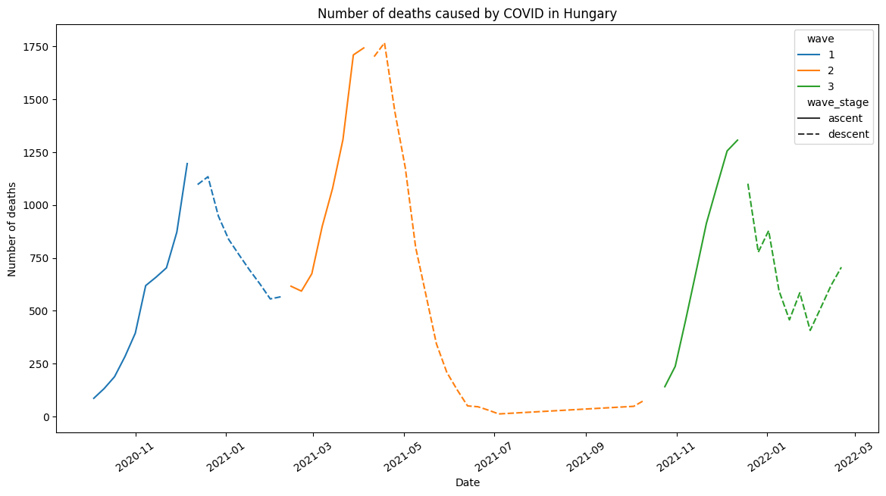
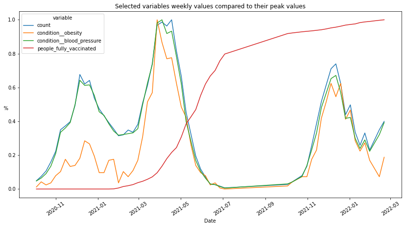

Explore Waves and Conditions
Explore Waves and Conditions¶
import numpy as np
import pandas as pd
import matplotlib.pyplot as plt
import seaborn as sns
plt.rcParams["figure.figsize"] = (14, 7)
df = pd.read_csv("covid_victim.csv").assign(is_70_plus=lambda df: df["age"] >= 70)
cond_cols = df.columns[df.columns.str.startswith("condition")]
mean_cols = [
"positive_rate",
"total_vaccinations",
"people_vaccinated",
"people_fully_vaccinated",
"total_boosters",
]
sum_cols = [*cond_cols, "is_70_plus", "is_male"]
aggs = {
**{c: "sum" for c in sum_cols},
**{c: "mean" for c in mean_cols},
"count": "sum",
}
MIN_ASC = 30
def get_wave_n(df):
wave_ascents = df.groupby("stage")["climb"].mean().loc[lambda s: s > 40].index
_dic = {a: i + 1 for i, a in enumerate(wave_ascents)}
wave_dic = {**_dic, **{k + 1: v for k, v in _dic.items()}}
subseq_waves = pd.Series([wave_dic.get(e, 0) for e in df["stage"]], index=df.index)
return np.where(
df["climb"].abs().rolling(4).mean() > (MIN_ASC / 2), subseq_waves, 0
).astype(str)
weekly_wave_df = (
df.assign(count=1, pdate=pd.to_datetime(df["estimated_date"]))
.groupby("pdate")
.agg(aggs)
.resample("1W")
.agg(aggs)
.assign(
climb=lambda df: df["count"].diff(),
stage=lambda df: (df["climb"] > MIN_ASC)
.diff()
.pipe(lambda s: s & (s != s.shift(1)) & (s != s.shift(2)))
.fillna(0)
.astype(int)
.cumsum(),
wave=get_wave_n,
wave_stage=lambda df: np.where(
df.groupby("stage")["climb"].transform("mean") > 0, "ascent", "descent"
),
)
.loc[lambda df: df["wave"] != "0"]
)
ax = weekly_wave_df.reset_index().pipe(
lambda df: sns.lineplot(
x="pdate", y="count", hue="wave", style="wave_stage", data=df
)
)
plt.title("Number of deaths caused by COVID in Hungary")
plt.xlabel("Date")
plt.xticks(rotation = 35)
plt.ylabel("Number of deaths")
plt.show()

changes = (
weekly_wave_df.loc[:, ["count", *sum_cols]]
.pipe(lambda df: 2 * df.diff() / (df + df.shift()))
.fillna(0)
.pipe(lambda df: df - df[["count"]].values)
.drop("count", axis=1)
)
(
pd.concat([changes, weekly_wave_df[["wave", "wave_stage"]]], axis=1)
.pivot_table(index=["wave", "wave_stage"], values=sum_cols)
.rename(columns=lambda s: s.replace("condition__", ""))
.style.background_gradient(
axis=None,
vmin=-0.1,
vmax=0.1,
cmap=sns.diverging_palette(
220,
20,
as_cmap=True,
),
)
.set_caption("Growth of conditions compared to the growth of deceased people (%)")
)
| blood_pressure | diabetes | heart | lungs | obesity | is_70_plus | is_male | ||
|---|---|---|---|---|---|---|---|---|
| wave | wave_stage | |||||||
| 1 | ascent | -0.002742 | 0.004524 | 0.037642 | 0.000924 | -0.007773 | 0.004463 | -0.008982 |
| descent | 0.006391 | 0.000929 | 0.019753 | 0.017998 | 0.040337 | -0.000641 | -0.004361 | |
| 2 | ascent | 0.000806 | 0.002395 | -0.049256 | -0.054787 | 0.119785 | -0.021713 | 0.011238 |
| descent | -0.011092 | 0.023527 | -0.021657 | 0.052348 | -0.032597 | -0.003948 | 0.009433 | |
| 3 | ascent | -0.007776 | -0.051923 | 0.024911 | -0.010020 | -0.039476 | 0.012501 | -0.016588 |
| descent | 0.007483 | 0.002109 | 0.025621 | -0.001901 | -0.048794 | 0.018292 | -0.005158 |
ax = weekly_wave_df.loc[
:,
[
"count",
"condition__obesity",
"condition__blood_pressure",
"people_fully_vaccinated",
],
].pipe(lambda df: df / df.max()).melt(ignore_index=False).reset_index().pipe(
lambda df: sns.lineplot(x="pdate", y="value", hue="variable", data=df)
)
plt.title("Selected variables weekly values compared to their peak values")
plt.xlabel("Date")
plt.xticks(rotation = 35)
plt.ylabel("%", rotation = 180)
plt.show()

condition_counts = (
pd.DataFrame(df["raw_conditions"].str.split(", ").tolist())
.unstack()
.dropna()
.value_counts()
)
df_contition_counts = pd.DataFrame(condition_counts.head(20), columns = ['Count'])
df_contition_counts.index.name= 'Conditions'
df_contition_counts.style.set_caption("Top 20 conditions recorded for the deceased")
| Count | |
|---|---|
| Conditions | |
| magasvérnyomás-betegség | 20589 |
| cukorbetegség | 12811 |
| magas vérnyomás | 8891 |
| iszkémiás szívbetegség | 4860 |
| szívbetegség | 3614 |
| demencia | 3022 |
| daganatos megbetegedés | 2798 |
| krónikus veseelégtelenség | 2299 |
| szívelégtelenség | 2224 |
| veseelégtelenség | 1952 |
| nem ismert alapbetegség | 1950 |
| szívritmuszavar | 1890 |
| tüdőbetegség | 1874 |
| érelmeszesedés | 1478 |
| pitvarfibrilláció | 1438 |
| vérszegénység | 1407 |
| kóros elhízás | 1392 |
| krónikus obstruktív tüdőbetegség | 1379 |
| elhízás | 1124 |
| asztma | 1109 |